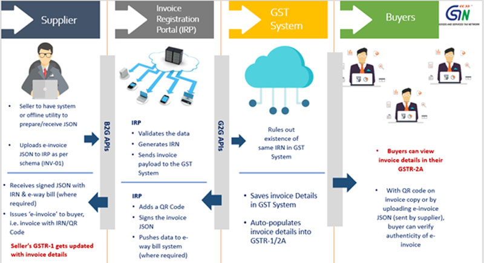

The GST Council, in its 37th meeting held on 20th September, 2019, approved introduction of electronic invoice ('e-invoice') in GST in a phased manner.
Accordingly, steps have been initiated to introduce 'e-invoicing' for reporting of Business to Business (B2B) and export invoices.
From October 1st, 2020, e-invoicing was made mandatory for taxpayers with aggregate turnover of more than Rs. 500 Cr. in any preceding financial year since 2017-18 (Vide Notification 13 of 2020 – Central Tax Dt. 21-3-2020 read with 61/2020 – Central Tax Dt. 30-7-2020). From 1st January, 2021 the turnover threshold was brought down to Rs. 100 Cr. (Vide Notification No. 88/2020 – Central Tax Dt. 10-11-2020) From 1st April, 2021, the threshold is going to be further brought down to Rs. 50 Cr. (Vide Notification No. 05/2021 – Central Tax Dt. 8-3-2021)
As per Rule 48(4) of CGST Rules, notified class of registered persons (whose aggregate turnover in any preceding financial year from 2017-18 onwards, is more than prescribed limit) have to prepare invoice by uploading specified particulars of invoice (in FORM GST INV-01) on Invoice Registration Portal (IRP) and obtain an Invoice Reference Number (IRN).
After following above 'e-invoicing' process, the invoice copy containing inter alia, the IRN (with QR Code) issued by the notified supplier to buyer is commonly referred to as 'e-invoice'.
As per Rule 48(5), any invoice issued by a notified person in any manner other than the manner specified in Rule 48(4), the same shall not be treated as an invoice.
It is important to mention that 'e-invoicing' is not generation of invoice by a Government portal. Taxpayers will continue to create their GST invoices on their own Accounting/Billing/ERP Systems. These invoices will now be reported to 'Invoice Registration Portal (IRP)'. On reporting, IRP will generate a unique 'Invoice Reference Number (IRN)', digitally sign it and return the e-invoice. A GST invoice will be valid only with a valid IRN.
IRP will also generate a QR code containing the unique IRN along with certain other key particulars. The QR code (which can be printed on invoice) enables offline verification of the fact whether the e-invoice has been reported on the IRP or not (using Mobile App etc.)
The standard format for e-invoice was notified as 'INV-01'. This format (called ‘schema’) facilitates seamless exchange of invoices between accounting systems of suppliers and buyers in an integrated electronic format.
e-invoice has many advantages for businesses such as Auto-reporting of invoices into GST return, auto-generation of e-way bill (where required).
e-invoicing will also facilitate standardisation and inter-operability leading to reduction of disputes among transacting parties, improve payment cycles, reduction of processing costs and thereby greatly improving overall business efficiency.
The documents presently covered by 'e-invoice' system are: Invoices, Credit Notes and Debit Notes, issued by notified class of taxpayers to registered persons (B2B) and for exports. Though different documents are covered, for ease of reference and understanding, the system is referred as 'e-invoicing'.
Certain classes of registered persons have been exempted from issuing e-invoices, viz. Special Economic Zone Units, insurer or a banking company or a financial institution, including a non-banking financial company, goods transport agency supplying services in relation to transportation of goods by road in a goods carriage, Suppliers of passenger transportation service, Suppliers of services by way of admission to exhibition of cinematograph films in multiplex screens.
The overall work flow of 'e-invoice' system is as follows:

Clarifications issued by CBIC on applicability of Dynamic QR Code can be seen HERE
 e-Invoice
e-Invoice